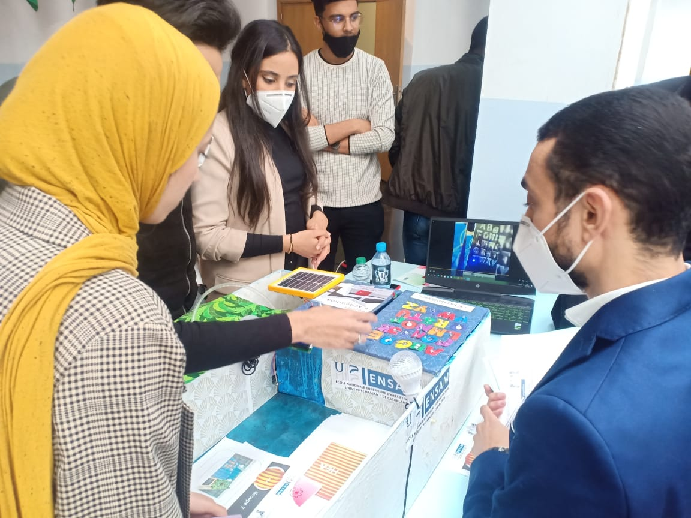
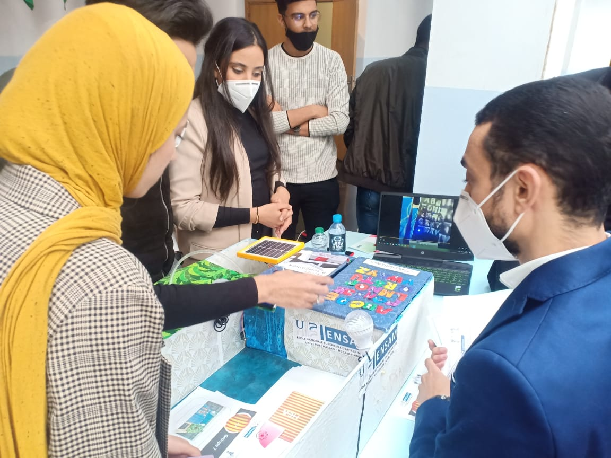
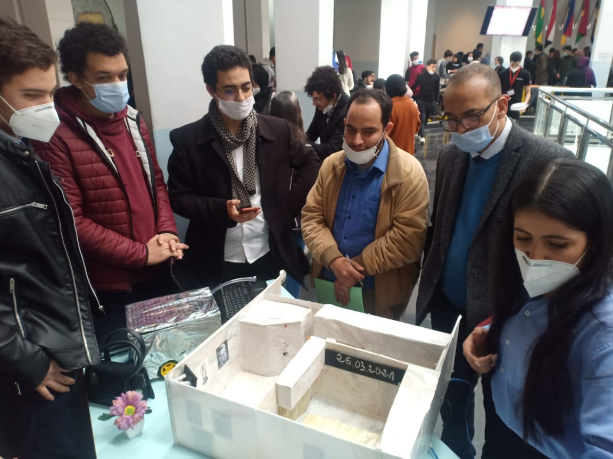
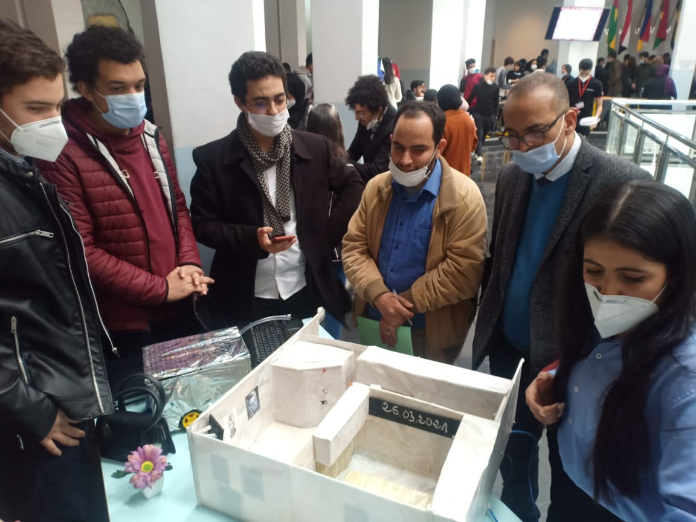

JOURNÉE D'ACQUISITION
Ceci est un site web de présentation de l'évènement annuel "Journée d'acquisition" de l'ENSAM CASA, une manifestation dont le but est d'encourager les élèves-ingénieur à innover en réalisant leurs propres projets technologiques.
Histoire:
La journée d'acquisition est un évènement annuel organisé à l'ENSAM CASABLANCA par l'association des objets connectés et systèmes intelligents en collaboration avec le club Arts et Métiers Mechatronics sous l'encadrement du professeur Mr Hamlich.
Le but principal de cette manifestation est de solliciter les élèves ingénieurs à innover en réalisant leurs propres projets technologiques touchant des domaines variants.
Elle représente également une opportunité pour que l'étudiant puisse concrétiser ses connaissances, améliorer son savoir-faire comme son savoir-être.
Planning:
Journée 1: Demi-finale:
- 9:00: Cérémonie d'ouverture
- 9:30: Mot du directeur de L'ENSAM CASABLANCA
- 9:45: Mot du président de l'association des objets connectés et systèmes intelligents
- 10:00: Mot du président du club Arts et Métiers Mechatronics
- 10:15: Conférences
- 12:00: Passage sur les stands
- 3:00: Délibération du jury
- 4:00: Annonce des projets finalistes
Journée 2: Finale:
- 9:30: Conférences
- 12:00: Pause Déjeuner
- 1:00: Présentation des projets finalistes
- 4:00: Délibération du jury
- 5:00: Cérémonie de remise des attestations et prix
Meilleurs Moments:
Quelques photos des éditions précédentes (Cliquez pour voir les photos en dimensions originales)


 

 

FAQ:
Q: Qu'est ce que la journée d'acquisition?
A : La journée d'acquisition est un évènement annuel organisé à l'ENSAM CASABLANCA par l'association des objets connectés et systèmes intelligents en collaboration avec le club Arts et Métiers Mechatronics. C'est une compétition dans laquelle des équipes d'étudiants participent en réalisant leurs propres projets technologiques qui sont en suite évalués par un jury.
Q: Quel est son but?
A : Le but principal est d'aider les étudiants à innover en accomplissant des projets technologiques touchant plusieurs domaines. En outre, c'est aussi une opportunité pour concrétiser les conaissances théoriques et améliorer son savoir-faire.
Q: Qui peut participer?
A : La participation est obligatoire pour les étudiants en 1ère année du cycle ingénieur ( à part ceux de la fillière Intelligence Artificielle et Génie Informatique). Les étudiants en cycle préparatoire adhérents au club Mechatronics peuvent également participer.